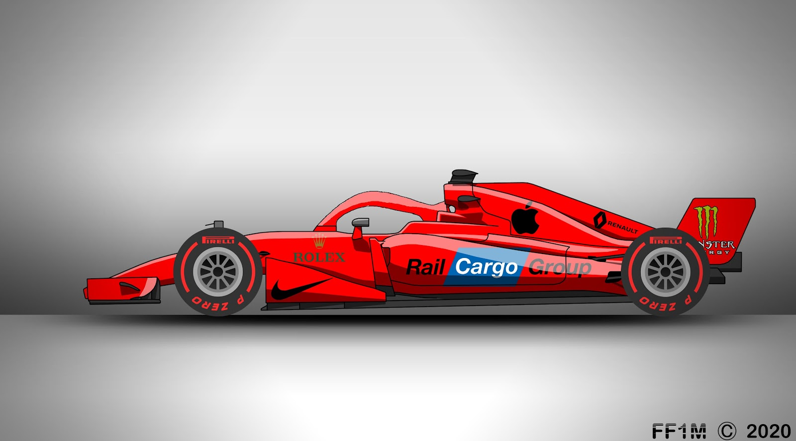
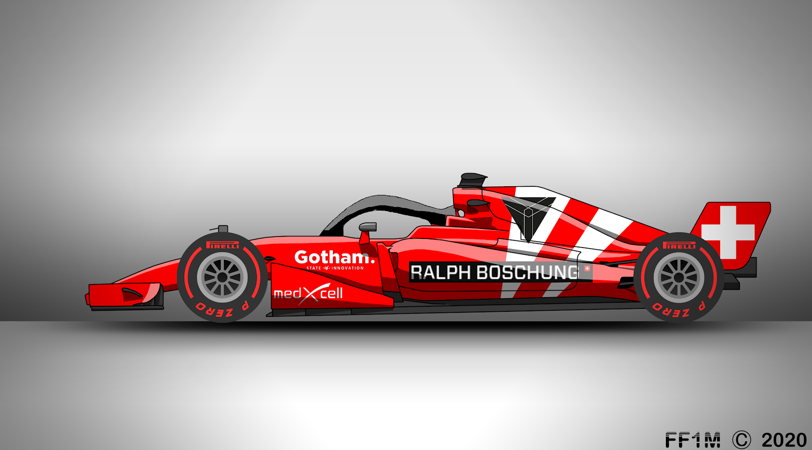

2020 December 11. A dátum amikor minden elkezdődött. Ekkor indítottam az instagram oldalam, egy olyan videó hatására, amiben Formula 1-es autókat modelleztek 2D-ben, és úgy gondoltam én is megpróbálom magam ebben a műfajban, csak én nem LinkedIn-re rakom fel őket, hanem instagramra. Az első alkotásom tehát egy F1-es autó volt:
Majd ezután csak gyártottam a design-okat, és hogyhogynem Ralf Boschung be like-olta néhány ilyen alkotásomat, és köszönetképpen csináltam egy autót neki is:
